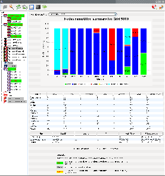
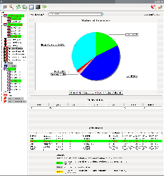

To monitor GRID'5000 four views can be displayed:
- The first view in Figure 5.1 corresponds to the
GRID'5000 view. You can see the occupancy of the grid in term of
free/occupied/dead/absent/suspected for each clusters and for the entire grid.
Added to the states of the nodes, you can also see which nodes you have reserved.
You can also see a table summarizing these information. Finally you have a
table of your reservation(s) on the grid. Thanks to two buttons you can save your
reservation(s) in a directory for a future use (for example in the DIET Mapping
tool of with the XMLGoDIETGenerator)
Figure 5.1:
Grid'5000 view
|
 |
- The second view in Figure 5.2 corresponds to a
cluster view. A graph represents the different number of nodes for each node
state ant the ones corresponding to your possible reservation(s), a table presents these
information in a different way. Another table
presents the reservations realized on the cluster. You can also display a
Gantt chart of the different reservations of the cluster to know when you are
able to reserve.
Figure 5.2:
Cluster view
|
 |
- The third view in figure 5.3 corresponds to the
job view. Here you can see the different information of the job such as the
nodes of the reservation, its state, the walltime, etc ...
David Loureiro
2007-07-04